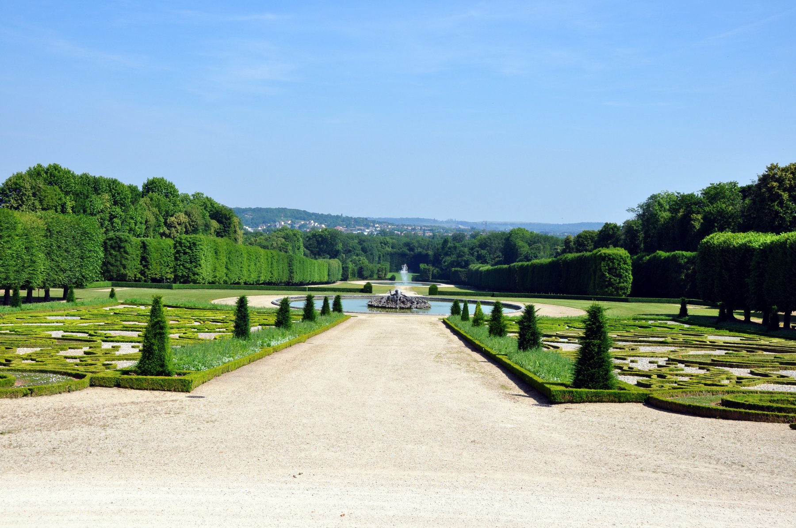

Présentation
Le Château de Champs-sur-Marne, situé en Île-de-France, est un exemple magnifique de l'architecture française du XVIIIe siècle. Ce château a été construit entre 1703 et 1708 et a accueilli de nombreux personnages célèbres tout au long de son histoire. Il est entouré d'un vaste jardin à la française, qui s'étend sur 85 hectares, un véritable écrin de verdure où allées géométriques, parterres fleuris et perspectives harmonieuses invitent à la promenade.
Classé monument historique, il est aujourd'hui un lieu incontournable pour les amateurs de patrimoine, d'histoire et d'architecture. Que vous soyez passionné d'histoire, curieux de découvrir l'art de vivre à la française, ou simplement en quête d'une balade paisible dans un cadre enchanteur, le Château de Champs-sur-Marne vous ouvre ses portes et vous promet une expérience inoubliable.

Histoire et Architecture
Le château de Champs sur-Marne a été conçuau début du XVIIIe siècle par l'architecte Pierre Bullet pour Charles Renouard de La Touanne. Il se distingue par son élégance et ses intérieurs somptueux, ornés de boiseries, de tapisseries et de meubles d'époque, reflétant le raffinement de la haute société de l'époque.
Au fil des siècles, le château a connu plusieurs propriétaires, chacun ayant contribué à son histoire et à sa restauration. En 1895, il fut acquis par la comtesse de La Moricière, qui entreprit d'importants travaux pour restaurer et enrichir ses décors intérieurs. En 1935, l'État français racheta le domaine, qui est aujourd'hui classé monument historique et ouvert au public. Ce lieu emblématique est un témoignage vivant de l’art de vivre à la française et continue de séduire par la richesse de son patrimoine architectural et culturel.
Vidéo : Visite du Château
Visiter le Château
Si vous souhaitez en savoir plus ou planifier votre visite, vous pouvez consulter le site officiel du Château de Champs-sur-Marne.
Télécharger le fichier PDF